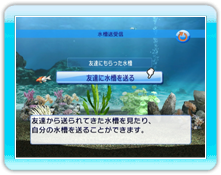
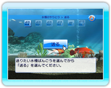

14 |
水槽のやりとりモード
|
 |
|
メインメニューの「水槽のやりとり」ボタンを選択して決定すると「水槽のやりとりモード」に入ります。お友達から受け取った水槽を見たり、お友達に水槽を送ったりすることが可能です。
Wii本体の受信ボックスにある、お友達から届いた水槽のリストが表示されます。見たい水槽を選択し決定してください。

Wii本体のアドレス帳に登録されているニックネームのリストが表示されます。
送りたいお友達を選んで決定してください。
送りたい水槽を数字アイコンで選択してから「送る」ボタンを選択して決定してください。
これでお友達に水槽を送ることができます。
|
 |
 |
 |